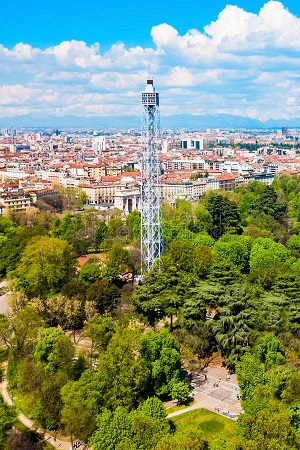
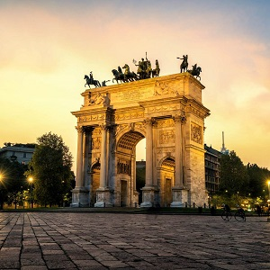
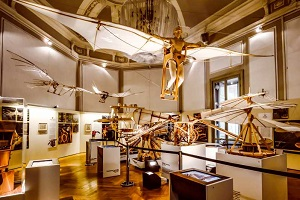
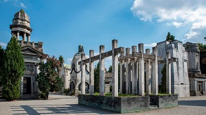
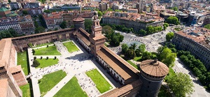

Activities not to be missed when visiting Milan
Branca Tower

Fig.1 - Torre Branca, Milan.
Arch Of Peace

Fig.2 - Arch Of Peace, Milan.
Leonardo3 Museum

Fig.3 - Leonardo3 Museum, Milan.
Monumental Cemetery

Fig.4 - Monumental Cemetery, Milan.
Sforzesco Castle

Fig.5 - Sforzesco Castle, Milan.